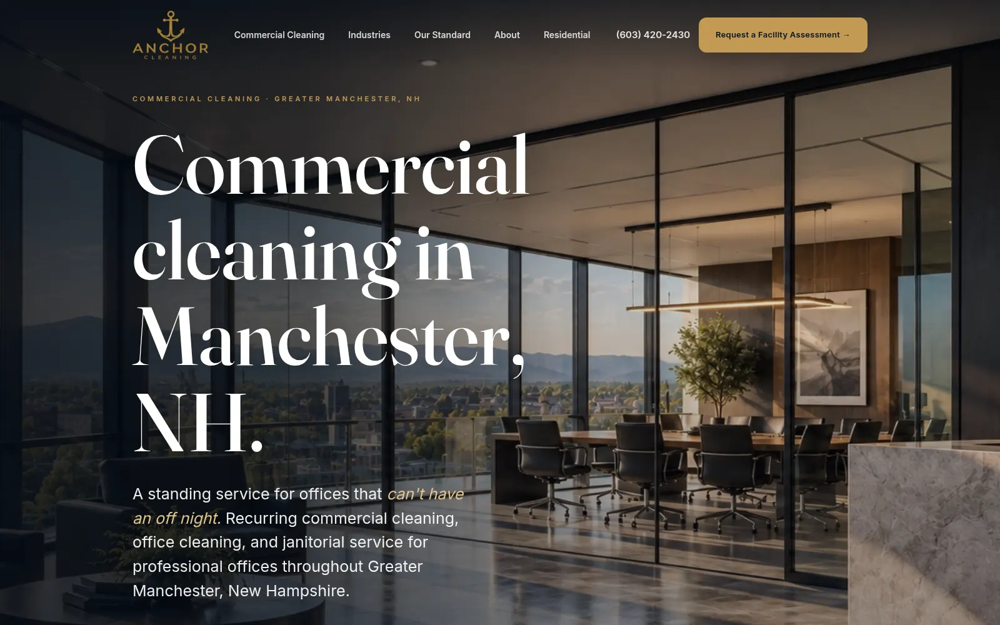

Anchor Cleaning
A local service business website built to improve trust, explain the offer clearly, and turn visitors into assessment requests.
goanchorcleaning.com
Studio Substral Manchester, New Hampshire Website diagnosis & design
Your website is working.
But is it working for you?
Scroll — the object separates
Recent builds where clearer messaging, stronger trust, and a better path to contact made the difference.

A local service business website built to improve trust, explain the offer clearly, and turn visitors into assessment requests.
goanchorcleaning.com
A premium CFO services website built to make a high-trust advisory business feel clear, credible, and polished online.
Your business may already be strong, but your website can still make it harder for people to trust you.
We help fix websites that feel outdated, generic, confusing, weak on mobile, or unclear about what the visitor should do next.
A focused redesign of the pages that matter most: stronger messaging, cleaner visual design, better mobile experience, clearer calls to action, contact or booking flow setup, basic SEO cleanup, launch support, and light post-launch refinement.
We measure what exists before deciding what should change.
Website assessment / Human reviewed
Before you rebuild, find out what’s broken. Send us the live domain and tell us what you’re trying to decide. We review the site and send a written recommendation you can act on.
What’s underneath determines what happens above it.